효빈광역시 관내 도로 목록 (ㅍ)
문서
토론
편집
역사
분류:
효빈광역시 | 도로 | 교통 | ㅍ목록
초성 이동:
ㄱ (50)
ㄴ (17)
ㄷ (19)
ㄹ (2)
ㅁ (12)
ㅂ (14)
ㅅ (34)
ㅇ (77)
ㅈ (28)
ㅊ (29)
ㅋ (2)
ㅌ (5)
ㅍ (19)
ㅎ (35)
기타 (5)
| 사진 | 도로명 | 노선 색상 | 총 연장 | 기점 | 종점 | 경유 행정구역 | 경유 버스 | 주요 시설물 |
|---|---|---|---|---|---|---|---|---|

|
팔번로 |
#7777AA |
4921m | 효빈광역시 중구 내항동(명일동) | 효빈광역시 청엽구 입빈동(효빈동2가) | 효빈광역시 중구 내항동(명일동) | 효빈광역시 중구 약맥동 | 효빈광역시 입빈동(입동3가) | 효빈광역시 청엽구 입빈동(효빈동1가) | 효빈광역시 청엽구 입빈동(효빈동2가) | 효빈광역시 중구 고도동(십덕동) | 효빈광역시 남구 월천동 | 효빈광역시 청엽구 입빈동(입동3가) | 급행버스05, 급행버스08, 급행버스09, 순환버스10, 순환버스80, 순환버스90, 광역버스3000, 공항버스A02, 간선버스12, 간선버스16, 간선버스17, 간선버스19, 간선버스29, 간선버스49, 간선버스59, 간선버스68, 지선버스111, 지선버스112, 지선버스123, 지선버스132, 지선버스151, 지선버스154, 지선버스171, 지선버스173, 지선버스181, 지선버스191, 지선버스192, 지선버스194, 지선버스129, 지선버스281, 지선버스292, 지선버스391, 지선버스491, 지선버스492, 지선버스 582, 지선버스591, 지선버스592, 지선버스162, 지선버스682, 지선버스692, 지선버스793, 마을버스 내항01 | 월천 페리체 아파트, 주음공원, 구보공원, 농림축산검역본부 효빈사무소, 효빈동신도시역 |

|
팔삼로 |
#7777AA |
3528m | 효빈광역시 창전구 동곡동 | 효빈광역시 창전구 팔조동 | 효빈광역시 창전구 동곡동 | 효빈광역시 창전구 팔조동 | 효빈광역시 창전구 동곡동(투자동) | 순환버스70, 간선버스 47, 간선버스58, 간선버스 77 | 투자 모르포니카아파트, 팔조더샵 |
|
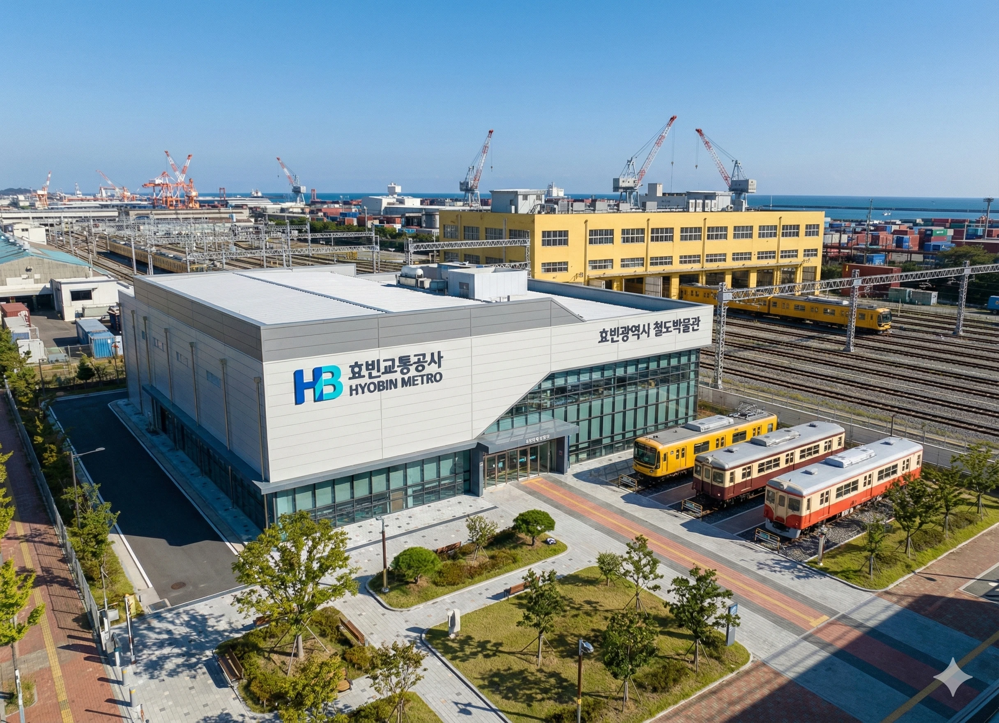 |
팔조로 |
#7777AA |
2353m | 효빈광역시 창전구 팔조동 | 효빈광역시 창전구 쌍엽2동(쌍엽동) | 효빈광역시 창전구 팔조동 | 효빈광역시 창전구 쌍엽2동(쌍엽동) | 급행버스01, 급행버스07, 순환버스70, 간선버스58, 간선버스 77, 지선버스471, 지선버스581, 지선버스572, 지선버스771 | 팔조역, 팔조 아이르 아파트, 롯데마트 맥스 창전점, 투자 더샵 아파트(2027) |
|
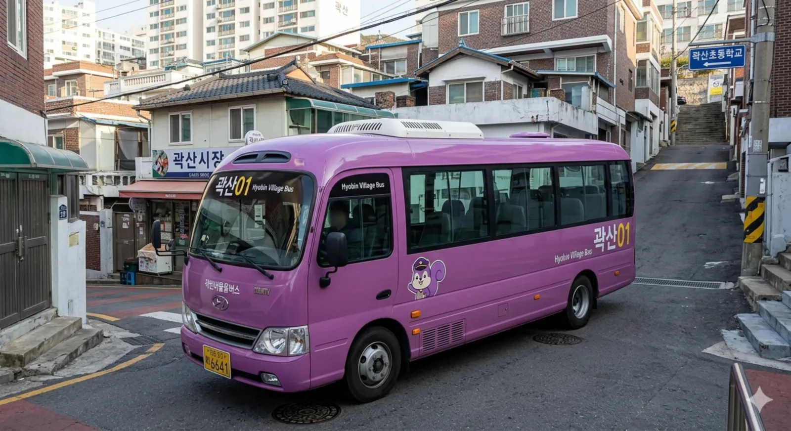 |
평곡로 |
#7777AA |
3162m | 효빈광역시 남구 곽산2동(곽산동) | 효빈광역시 남구 평당7동(평당동) | 효빈광역시 남구 곽산2동(곽산동) | 효빈광역시 남구 평당7동(평당동) | 급행버스05, 간선버스29, 지선버스191, 지선버스291, 지선버스292, 지선버스791, 지선버스891, 지선버스991, 마을버스 곽산01 | 곽산역공원, 곽산중, 평당한진스카이뷰아파트1단지, 평당한진스카이뷰2단지 |

|
평당관통로 |
#7777AA |
4070m | 효빈광역시 남구 평당5동(평당동) | 효빈광역시 남구 어간3동(운양동) | 효빈광역시 남구 평당5동(평당동) | 효빈광역시 남구 평당3동(평당동) | 효빈광역시 남구 고당동(평당동) | 효빈광역시 남구 고당동(고간동) | 효빈광역시 남구 어간3동(운양동) | 효빈광역시 남구 평당2동(평당동) | 급행버스04, 급행버스05, 급행버스09, 순환버스90, 광역버스3000, 광역버스 9000, 공항버스A02, 간선버스19, 간선버스29, 간선버스79, 간선버스89, 지선버스191, 지선버스192, 지선버스194, 지선버스291, 지선버스491, 지선버스791, 지선버스792, 지선버스793, 지선버스891, 지선버스892, 지선버스991 | 평당도뮤토아파트, 남구청, 남구보건소, 대한상공회의소 효빈인력개발원, 효빈남초 |

|
평당남북1로 |
#7777AA |
5738m | 효빈광역시 남구 항4동(항동3가) | 효빈광역시 남구 평당7동(평당동) | 효빈광역시 남구 항4동(항동3가) | 효빈광역시 남구 평당7동(평당동) | 효빈광역시 남구 어간3동(어간동) | 급행버스04, 급행버스09, 순환버스90, 공항버스A02, 간선버스19, 간선버스29, 간선버스49, 간선버스79, 지선버스191, 지선버스192, 지선버스194, 지선버스291, 지선버스391, 지선버스491, 지선버스591, 지선버스592, 지선버스691, 지선버스791, 지선버스792, 지선버스891 | 효빈세무서, 창문공원, 주곡역, 세무지구역, 항만해변역, 어두아파트 |
|
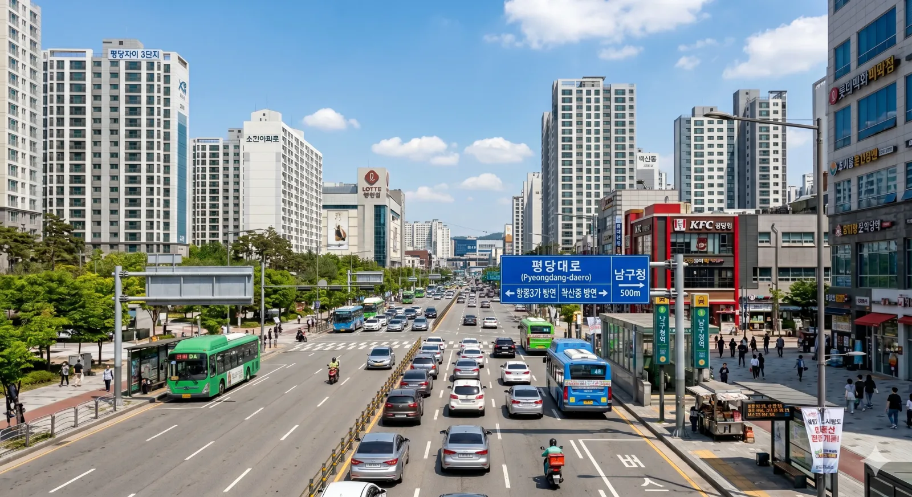 |
평당대로 |
#7777AA |
6780m | 효빈광역시 남구 항4동(항동3가) | 효빈광역시 남구 곽산1동(곽산동) | 효빈광역시 남구 항4동(항동3가) | 효빈광역시 남구 곽산1동(곽산동) | 효빈광역시 남구 평당5동(평당동) | 급행버스04, 급행버스05, 급행버스09, 순환버스90, 광역버스3000, 광역버스 9000, 공항버스A02, 간선버스39, 간선버스49, 간선버스59, 간선버스79, 지선버스191, 지선버스192, 지선버스391, 지선버스491, 지선버스492, 지선버스591, 지선버스592, 지선버스691, 지선버스692, 지선버스792, 지선버스793, 지선버스891, 지선버스892, 지선버스991 | 소진아파트, 평당중앙공원, 남구청역, 신거역, KFC 평당점, 신거초, 효빈항역행복주택, 평당7동행정복지센터, 효천고, 평당자이3단지 |
|
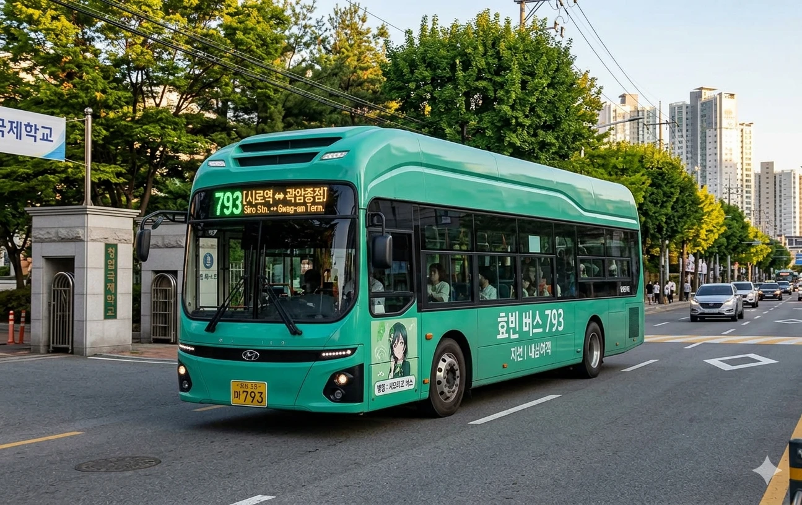 |
평당동서1로 |
#7777AA |
3244m | 효빈광역시 남구 곽산2동(곽산동) | 효빈광역시 남구 평당7동(평당동) | 효빈광역시 남구 곽산2동(곽산동) | 효빈광역시 남구 평당7동(평당동) | 급행버스04, 급행버스05, 간선버스19, 간선버스29, 지선버스191, 지선버스291, 지선버스292, 지선버스791, 지선버스793, 지선버스991 | 회산역, 회산역푸르지오, 곽산더샵아파트(2027.8예정), 평당해모로아파트, 남부소방서역, 효빈남부소방서 |
|
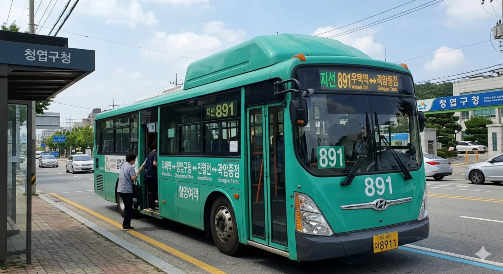 |
평당동서2로 |
#7777AA |
4270m | 효빈광역시 남구 평당4동(평당동) | 효빈광역시 남구 평당6동(평당동) | 효빈광역시 남구 평당4동(평당동) | 효빈광역시 남구 평당6동(평당동) | 효빈광역시 남구 평당7동(평당동) | 급행버스04, 급행버스05, 공항버스A02, 간선버스29, 지선버스291, 지선버스891, 지선버스991 | 효빈예술문화회관, 평당양우내안에아파트1단지, 남서아파트, 평당자이1단지, 평당초, 능남아파트, 포장초, 평당이라이아파트, 평당두레라움아파트 |
|
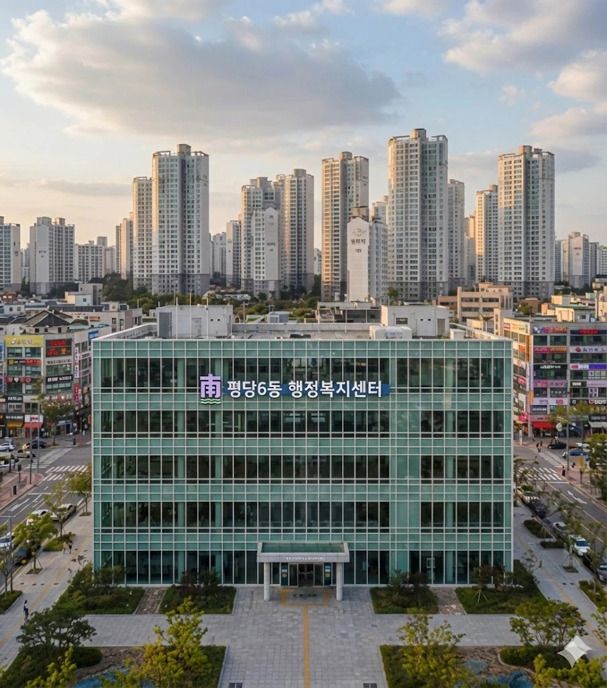 |
평당동서3로 |
#7777AA |
3626m | 효빈광역시 남구 평당4동(평당동) | 효빈광역시 남구 평당6동(평당동) | 효빈광역시 남구 평당4동(평당동) | 효빈광역시 남구 평당6동(평당동) | 효빈광역시 남구 평당5동(평당동) | 급행버스04, 급행버스05, 간선버스29, 지선버스191, 지선버스291, 지선버스292, 지선버스793, 지선버스991 | 데시안아파트, 남효빈우체국, 평당필하우스1단지, 평당6동행정복지센터, 대택아파트, 설채초 |
|
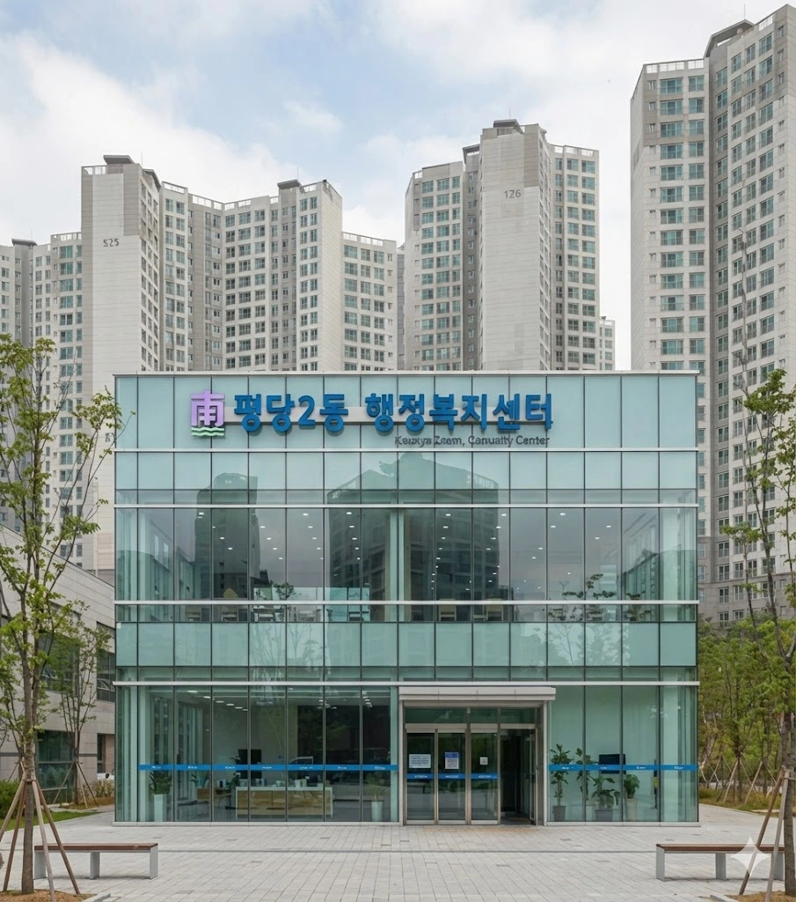 |
평당북로 |
#7777AA |
6255m | 효빈광역시 남구 어간3동(어간동) | 효빈광역시 남구 월천동(신흥동) | 효빈광역시 남구 어간3동(어간동) | 효빈광역시 남구 월천동(신흥동) | 효빈광역시 남구 고당동(고간동) | 급행버스04, 급행버스05, 순환버스90, 광역버스3000, 공항버스A02, 간선버스19, 간선버스29, 간선버스79, 지선버스191, 지선버스192, 지선버스193, 지선버스292, 지선버스791, 지선버스793, 지선버스991 | 창문공원, 평당파크사이드, 평당2동행정복지센터, 애마초, 평당주공1단지, 고당동행정복지센터, 기아자동차 효빈공장, 금호타이어효빈공장, 한국산업인력공단 효빈지역본부 |
|
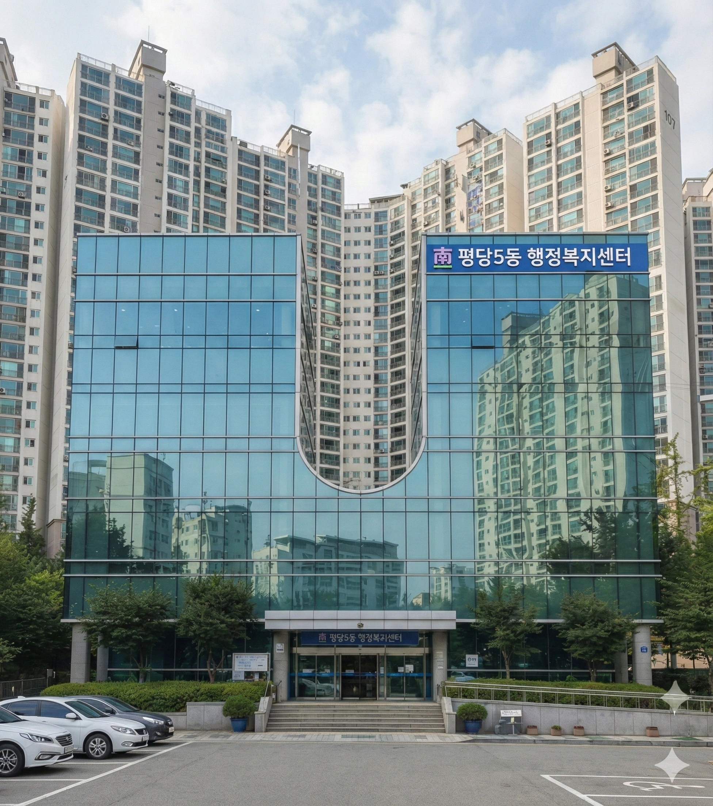 |
평당역로 |
#7777AA |
5544m | 효빈광역시 남구 평당4동(평당동) | 효빈광역시 남구 평당7동(평당동) | 효빈광역시 남구 평당4동(평당동) | 효빈광역시 남구 평당6동(평당동) | 효빈광역시 남구 평당7동(평당동) | 효빈광역시 남구 평당5동(평당동) | 급행버스04, 급행버스05, 간선버스29, 지선버스191, 지선버스291, 지선버스292, 지선버스793, 지선버스991 | 평당헤리움아파트, 롯데백화점 평당점, 평당5동행정복지센터, 평당역, 평당제일아파트, 간자초, 버거킹 평당점, 평당코아루아파트, 효빈 남구선관위, 평당아이파크1단지 |

|
평당중앙2로 |
#7777AA |
3999m | 효빈광역시 남구 평당4동(평당동) | 효빈광역시 남구 평당6동(평당동) | 효빈광역시 남구 평당4동(평당동) | 효빈광역시 남구 평당6동(평당동) | 효빈광역시 남구 평당7동(평당동) | 급행버스04, 공항버스A02, 간선버스19, 간선버스29, 지선버스191, 지선버스291, 지선버스292, 지선버스791, 지선버스793, 지선버스991 | 트레이더스 곽산평당점, 산내중, 평당하브아파트, 평당양우내안에아파트2단지, 능사초, 평당우방아이유쉘아파트 |

|
평당중앙로 |
#7777AA |
3456m | 효빈광역시 남구 평당4동(평당동) | 효빈광역시 남구 평당6동(평당동) | 효빈광역시 남구 평당4동(평당동) | 효빈광역시 남구 평당6동(평당동) | 효빈광역시 남구 평당5동(평당동) | 급행버스04, 공항버스A02, 간선버스29, 지선버스291, 지선버스891, 지선버스991 | 평당4동행정복지센터, 평당노블리안아파트, 삼선초, 롯데마트 평당점, 롯데시네마 평당, 평당풍림아이원아파트, 평산초, 평당자이4단지, 평당아이파크2단지 |

|
평안명로 |
#7777AA |
4553m | 효빈광역시 북구 천왕사동 | 효빈광역시 북구 중수4동(중수동) | 효빈광역시 북구 천왕사동 | 효빈광역시 북구 산고동(사연동) | 효빈광역시 북구 중수4동(중수동) | 효빈광역시 북구 산고동(서도동) | 급행버스02번, 순환버스30, 광역버스2000, 광역버스3000, 좌석버스3333, 좌석버스6666, 공항버스 A01, 공항버스A03, 간선버스13, 간선버스24, 간선버스25, 간선버스33, 간선버스37, 간선버스39, 지선버스131, 지선버스251, 지선버스252, 지선버스261, 지선버스262, 지선버스271, 지선버스331, 지선버스 361, 지선버스391 | 천왕사아파트 2단지, 청남초, 남중사거리, 효빈북부경찰서, HJ몰 중수점, 메가박스 HJ중수 |
|
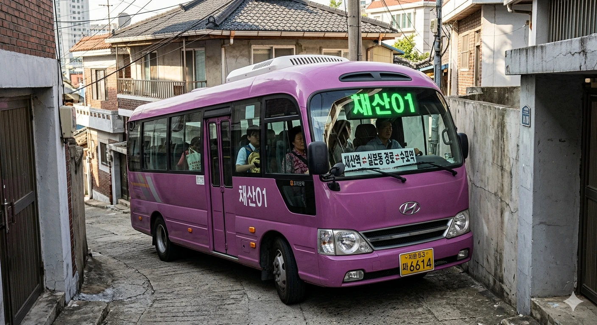 |
평전서로 |
#7777AA |
2476m | 효빈광역시 북구 채산동(곡진동) | 효빈광역시 북구 채산동(신영동) | 효빈광역시 북구 채산동(곡진동) | 효빈광역시 북구 채산동(평전동) | 효빈광역시 북구 채산동(신영동) | 급행버스02번, 급행버스05, 광역버스2000, 간선버스13, 간선버스23, 간선버스25, 간선버스35, 간선버스38, 지선버스131, 지선버스232, 지선버스241, 지선버스251, 지선버스334, 지선버스341, 지선버스391, 지선버스492, 지선버스522, 마을버스 채산01, 마을버스 채산02 | 삼성전자 효빈연수원, 평전고, 삼성회주공동사원아파트 |
|
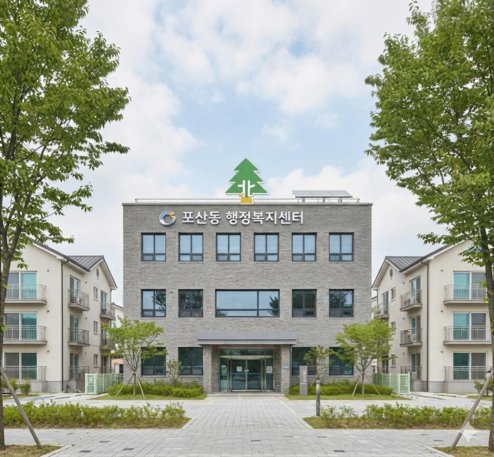 |
포산로 |
#7777AA |
3197m | 효빈광역시 북구 포산동 | 효빈광역시 북구 오내1동(오내동) | 효빈광역시 북구 포산동 | 효빈광역시 북구 오내1동(오내동) | 효빈광역시 북구 산고동(사연동) | 급행버스02번, 순환버스20, 순환버스30, 좌석버스3333, 간선버스23, 간선버스24, 간선버스25, 간선버스33, 간선버스34, 간선버스35, 간선버스36, 간선버스37, 간선버스39, 지선버스231, 지선버스232, 지선버스241, 지선버스251, 지선버스252, 지선버스262, 지선버스351, 지선버스 361, 지선버스831, 지선버스522 | 오내센트럴시티아파트1단지, 대금초, 산고동행정복지센터, 한국농수산식품유통공사, 신천초, 한국농수산 식품유통공사, 포산중, 포산초, 포산동행정복지센터 |
|
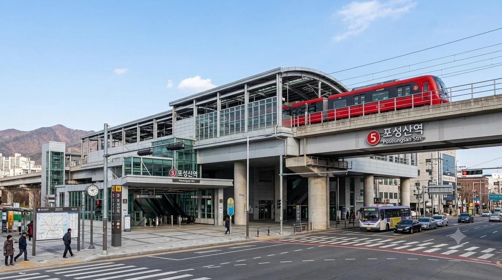 |
포성로 |
#7777AA |
4701m | 효빈광역시 안천구 이십기동(추자동) | 효빈광역시 탄성군 도변읍 조일리 | 효빈광역시 안천구 이십기동(추자동) | 효빈광역시 탄성군 도변읍 조일리 | 효빈광역시 탄성군 도변읍 잠재리 | 급행버스05, 순환버스40, 광역버스 4000, 광역버스 9000, 간선버스35, 간선버스46, 간선버스57, 간선버스58, 간선버스68, 지선버스252, 지선버스551, 지선버스 552, 지선버스682, 지선버스692, 지선버스572, 마을버스 도변01 | |
| 포성산로 |
#7777AA |
15536m | 효빈광역시 안천구 뇌전동(하가동) | 효빈광역시 탄성군 야진읍 아득리 | 효빈광역시 안천구 뇌전동(하가동) | 효빈광역시 안천구 안천5동(안천동) | 효빈광역시 안천구 백합동(상점동) | 효빈광역시 탄성군 도변읍 요우리 | 효빈광역시 탄성군 도변읍 도변리 | 효빈광역시 탄성군 도변읍 조일리 | 효빈광역시 탄성군 야진읍 신리 | 효빈광역시 탄성군 야진읍 미우리 | 효빈광역시 탄성군 야진읍 원심리 | 효빈광역시 탄성군 야진읍 아득리 | 효빈광역시 안천구 안천7동(안천동) | 효빈광역시 안천구 백합동 | 급행버스02번, 급행버스03번, 순환버스40, 순환버스60, 광역버스 4000, 광역버스 5000, 광역버스6000, 광역버스 9000, 좌석버스6666, 좌석버스7777, 공항버스 A01, 공항버스A03, 간선버스14, 간선버스24, 간선버스34, 간선버스35, 간선버스36, 간선버스45, 간선버스46, 간선버스48, 간선버스56, 간선버스57, 간선버스58, 간선버스68, 간선버스69, 지선버스151, 지선버스251, 지선버스252, 지선버스261, 지선버스262, 지선버스341, 지선버스441, 지선버스451, 지선버스471, 지선버스472, 지선버스481, 지선버스491, 지선버스551, 지선버스561, 지선버스571, 지선버스581, 지선버스 582, 지선버스591, 지선버스592, 지선버스661, 지선버스672, 지선버스682, 지선버스692, 지선버스572, 마을버스 야진01, 마을버스 야진02, 마을버스 도변01, 마을버스 뇌전01 | 안천삼성아파트1단지, 안천7동행정복지센터, 화범초, 안천5동행정복지센터, 안천여고, 릴리타운아파트, 백합공원역, 채화초, 제택고, 팔망성초, 팔망성고, 요우역, 롯데시네마 도변, 애니메이트 탄성점, 도변역, 도변고, 도변읍행정복지센터, 도변오투그란데아파트, 도변 오투그란데, 포성산역, 아득리 |